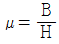
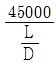
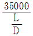
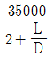
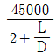

자기비파괴검사산업기사(구) (2009-07-26 기출문제)
1과목: 자기탐상시험원리
1. 자분탐상시험에서 일반적으로 탐상 후 시험체를 탈자 하여야 한다. 다음 중 탈자를 하지 않아도 되는 경우는?
- 시험체가 높은 보자성인 경우
- 시험체가 강철의 용접물인 경우
- 외부 누설자계가 없는 경우
- 초기 자화전류보다 낮은 전류로 시험체를 재검사하는 경우
(정답률: 알수없음)

2. 탄소강에서 탄소 함유량과 시험체의 전기, 자기적 성질의 관계는?
- 탄소 함유량이 많을수록 자기 포화에 필요로 하는 자계의 세기 값은 커진다.
- 탄소 함유량이 작아질수록 전기전도도도 작아진다.
- 탄소 함유량이 클수록 최대 자속밀도도 커진다.
- 탄소 함유량이 작을수록 히스테리시스 손실은 커진다.
(정답률: 알수없음)
3. 자계의 세기가 4×103A/m 인 강자성체의 자속밀도를 측정하였더니 0.3T(Tesla)였다. 철심의 비투자율은?
- 5.97
- 59.7
- 7.5
- 75
(정답률: 알수없음)
4. 탄소 함량과 자기특성은 서로 밀접한 관계로서 탄소함량이 많은 고탄소강의 자기특성만을 옳게 나타낸 것은?
- 고투자율, 고보자성, 고항자력 이다.
- 고투자율, 저보자성, 저항자력 이다.
- 저투자율, 고보자성, 고항자력 이다.
- 저투자율, 저보자성, 저항자력 이다.
(정답률: 알수없음)
5. 솔레노이드 코일을 사용한 자분탐상시험에서 투자율(μ)과 비투자율에 대한 설명 중 옳은 것은? (단, B는 시험체의 자속밀도, H는 코일의 자계의 세기이다.)
- 투자율이 클수록 자속에 대한 저항이 크다.
- 강자성체의 비투자율 값은 약 1이다.
- 비자성체의 비투자율 값은 수백~수천이다.

의 식으로 표시된다.
(정답률: 알수없음)
6. 다음 중 자분탐상시험 후 결함자분모양을 기록하는 방법이 아닌 것은?
- 사진촬영
- 점착성 투명테이프로 전사하는 방법
- 스트립 차트에 기록 보존하는 방법
- 투명한 니스나 래커 등으로 처리하여 시험면에 고정하거나 가열하여 자분은 고착시키는 방법
(정답률: 알수없음)
7. 다음 중 시험체와 시험체 주위의 압력차를 이용하여 수행하는 비파괴검사법은?
- 누설검사
- X선 회절법
- 중성자투과검사
- 와전류탐상검사
(정답률: 알수없음)
8. 침투탐상시험에서 이원성 침투액을 사용하는 가장 큰 특성은?
- 과잉 세척의 우려가 없다.
- 탐상감도가 매우 우수하다.
- 실외 적용시험에만 적합하다.
- 밝은 곳이나 어두운 장소에서도 시험이 가능하다.
(정답률: 알수없음)
9. 다음 누설검사법 중 가장 미세한 누설량을 검출할 수 있는 것은?
- 기포누설시험(가압법)
- 기포누설시험(진공법)
- 헬륨누설시험(진공법)
- 암모니아누설시험(진공법)
(정답률: 알수없음)
10. 다음 중 환봉류의 와전류탐상시험시 시험품을 관동시켜 검사하는 방법으로 결함 위치를 가장 정확히 측정할 수 있는 것은?
- 내삽형 코일(inner coil)
- 관통 코일(encircling coil)
- 펜케이크 코일(pancake coil)
- 회전형 프로브코일(spinning probe coil)
(정답률: 알수없음)
11. 초음파탐상시험과 음향방출시험에 대한 다음 설명 중 초음파탐상시험에 해당되는 것은?
- 시험체 결정입자의 영향을 크게 받는다.
- 운전 중 감시와 균열 발생 진행에 응용된다.
- 탐촉자는 시험체에서 탄성파 방출 시에만 수신한다.
- 외적으로 하중을 부과해야만 결함 검출이 가능하다.
(정답률: 알수없음)
12. 다음의 자화전류 종류 중 자분탐상시험으로 표면하(下)의 결함을 검출하는데 가장 적합한 것은?
- 단상반파정류
- 단상전파정류
- 3상반파정류
- 3상전파정류
(정답률: 알수없음)
13. 다음 중 침투탐상시험으로 쉽게 검출할 수 있는 결함은?
- 블로 홀
- 내부 기공
- 슬래그 혼입
- 표면의 피로균열
(정답률: 알수없음)
14. 방사선투과시험시 쉽게 검출되는 불연속 중 콜드셧(cold shut)은 주로 어느 공정에서 발생하는가?
- 주조
- 단조
- 압출
- 인발
(정답률: 알수없음)
15. 다음 중 제품이나 부품을 전체적으로 모니터링 할 수 있는 비파괴시험 방법은?
- 육안시험
- 음향방출시험
- 초음파탐상시험
- 와전류탐상시험
(정답률: 알수없음)
16. 다음 중 비파괴검사의 신뢰도에 영향을 미치는 중요 요소와 거리가 먼 것은?
- 검사 장비
- 제품의 용도
- 검사 기술자의 능력
- 검출해야 할 결함의 크기
(정답률: 알수없음)
17. 다음 중 와전류탐상시험에서 시험주파수 선정시 고려해야 할 요소와 가장 거리가 먼 것은?
- 표피 효과
- 코일일피던스 특성
- 프로브의 속도
- 프로브의 형태
(정답률: 알수없음)
18. 철강 부품의 단조시 단조 겹침이 표면에 발생하였을 때 이 불연속의 탐상에 가장 적합한 비파괴검사법은?
- 방사선투과시험
- 초음파탐상시험
- 자분탐상시험
- 음향방출시험
(정답률: 알수없음)
19. 다른 비파괴검사법과 비교하여 초음파탐상시험의 가장 큰 장점은?
- 표면 직하의 얕은 결함 검출이 쉽다.
- 재현성이 뛰어나며 기록보존이 용이하다.
- 침투력이 매우 높아 아주 깊은 곳의 결함검출이 용이하다.
- 내부 불연속의 모양, 위치, 크기 및 방향을 정확히 측정할 수 있다.
(정답률: 알수없음)
20. 다음 비파괴검사법 중 강의 피로균열에 대한 결함의 검출감도가 가장 뒤떨어지는 것은?
- 자분탐상시험
- 초음파탐상시험
- 침투탐상시험
- 방사선투과시험
(정답률: 알수없음)
2과목: 자기탐상검사
21. 다음 중 도체패드(contact pad)를 사용하지 않아도 되는 자분탐상검사법은?
- 극간법
- 프로드법
- 축통전법
- 직각통전법
(정답률: 알수없음)
22. 코일법으로 자분탐상검사시 시험체의 모서리에서 발생하는 반자계의 영향을 줄이기 위한 방법으로 적합하지 않은 것은?
- 자화전류로 교류보다는 직류를 사용한다.
- 가능한 한 길이가 긴 코일을 사용한다.
- 시험체의 길이/직경 비를 가능한 한 크게 한다
- 시험체의 끝부분에 강자성체를 연결하여 사용한다.
(정답률: 알수없음)
23. 다음 중 두꺼운 강판의 용접부 표면 쪽만 측정이 가능할 때 자분탐상검사로 발견될 수 없는 결함은?
- 파이프(pipe)
- 기공(Blow hole)
- 루트균열(Root crack)
- 라미네이션(Lamination)
(정답률: 알수없음)
24. 자분탐상검사의 탐상장치에 대한 설명으로 옳은 것은?
- 자외선조사등의 파장 영역은 250㎚ 부근이다.
- 프로드 전극으로 사용되는 구리봉의 굵기는 자화전류의 크기에 따라 변경할 필요가 있다.
- 자외선조사등은 반영구적이며, 자외선 강도가 변하지 않으므로 관리할 필요가 없다.
- 교류 자화장치는 표면결함 검출보다는 내부결함을 잘 검출할 수 있다.
(정답률: 알수없음)
25. 다음 중 축통전법으로 파이프를 검사하여 결함을 검출하고자 할 때 가장 검출이 잘되는 결함의 방향으로 옳은 것은?
- 파이프 내면 축방향 결함
- 파이프 외면 축방향 결함
- 파이프 내면 원주방향 결함
- 파이프 외면 원주방향 결함
(정답률: 알수없음)
26. 자분탐상검사의 프로드법에서 전극(Prod)의 간격을 4인치로 하고 검사하였을 때 유도되는 자계는?
- 선형자계
- 원형자계
- 솔레노이드 자계
- 방사선형 자계
(정답률: 알수없음)
27. 금속이 응고될 때 화합물의 분포가 일정하지 않아 발생하는 결함으로 자분탐상검사에서 주로 선상의 자분모양으로 검출되는 결함은?
- 균열(crack)
- 편석(segregation)
- 콜드셧(cold shut)
- 핫티어(hot tear)
(정답률: 알수없음)
28. 서로 연결된 직경 20㎜와 30㎜ 인 환봉을 직경(㎜)당 40A가 요구되는 축통전법으로 전류를 통전시켜 자분탐상검사 할 때 검사 순서와 전류량으로 옳은 것은?
- 직경에 관계없이 800A 로만 검사한다.
- 직경에 관계없이 1200A 로만 검사한다.
- 먼저 직경 20㎜ 인 곳을 800A 로 검사하고, 직경 30㎜ 인 곳을 나중에 1200A 로 검사한다.
- 먼저 직경 30㎜ 인 곳을 1200A 로 검사하고, 직경 20㎜ 인 곳을 나중에 800A 로 검사한다.
(정답률: 알수없음)
29. 다음 중 자분탐상검사에 사용되는 자분의 관리 방법으로 적합한 것은?
- 건식 자분은 오염되지 않으므로 사용한 것을 재사용 하도록 관리한다.
- 자분 살포기에는 어제든지 사용할 수 있도록 자분은 가득 채워서 관리한다.
- 자분은 항상 자성을 가지고 있으므로 별도의 자성, 흡착성 등은 점검하지 않는다.
- 사용 전 점검 또는 정기적인 점검으로 성능을 조사, 관리한다.
(정답률: 알수없음)
30. 단조와 주조 과정에서 발생할 수 있는 결함들로만 짝지어진 것은?
- 터짐(Burst), 콜드셧(Cold shut)
- 이음매(Seam), 개재물(Inclusion)
- 파이프(Pipe), 융합불량(Lack of fusion)
- 편석(Segregation), 라미네이션(Lamination)
(정답률: 알수없음)
31. 자분탐상검사의 전류관통법에 의한 자화의 특징으로 옳은 것은?
- 닫힌 자기회로를 구성하므로 이음 철봉을 필요로 하지 않는다.
- 자계의 세기는 전류관통봉의 중심으로부터의 거리에 비례한다.
- 자화전류를 직류로 사용하면 표면아래 결함의 검출이 어렵다.
- 자화전류로 교류를 사용하면 직류의 경우보다 표피효과가 적다.
(정답률: 알수없음)
32. 직경 2㎝, 길이 40㎝ 인 강봉을 전체적으로 검사하기 위한 가장 효율적인 자분탐상 검사방법의 조합은?
- 코일법과 극간법
- 코일법과 축통전법
- 코일법과 전류관통법
- 극간법과 유도전류법
(정답률: 알수없음)
33. 다음 중 습식자분의 적용이 가장 적합한 것은?
- 미세한 피로균열의 검출
- 고온 용접부의 표면 결함
- 주조품의 표면 아래 결함
- 사형주물의 거친 표면 결함
(정답률: 알수없음)
34. 다음 중 자분탐상검사에 사용되는 건식자분의 보관 방법은로 옳은 것은?
- 음지의 습기가 많은 곳에 보관한다.
- 음지의 습기가 적은 곳에 보관한다.
- 양지에서 자석과 함께 보관한다.
- 양지의 자외선이 많이 비추는 곳에 보관한다.
(정답률: 알수없음)
35. 다음 중 자분탐상검사에서 얇은 전자연철판의 한쪽면에 직선형 또는 원형의 흠을 갖는 것으로 대략의 자화전류 값을 구할 수 있는 시험편은?
- A형 표준시험편
- B형 대비시험편
- C1형 표준시험편
- C2형 표준시험편
(정답률: 알수없음)
36. 자분탐상검사에서 자분 검사액의 농도를 측정하는 방법으로 올바른 것은?
- 검사액의 무게를 측정한다.
- 벤졸에 고체성분을 담근다.
- 검사액이 침전되도록 놓아둔다.
- 자석을 검사약에 넣어둔다.
(정답률: 알수없음)
37. 다음 중 형광자분탐상검사에 사용되는 자외선조사등(black light)의 파장 범위로 옳은 것은?
- 320~400㎚
- 420~450㎚
- 565~650㎚
- 680~780㎚
(정답률: 알수없음)
38. 스캐닝 디텍터(Scanning Detector)를 사용하여 자분모양을 검출할 때 가장 널리 사용되는 Laser 광원의 색상은?
- 황록색
- 청색
- 적색
- 황색
(정답률: 알수없음)
39. 검사원이 자분탐상검사 후 제출한 검사보고서를 검토하던 중 조도는 기재되어 있으나 사용한 자외선조사등의 파장이 기재되어 있지 않음을 발견하였다. 감독자로서 취해야 할 적절한 조치는?
- 전면 재검사를 실시하도록 지시한다.
- 자외선조사등의 파장을 측정하여 기재한다.
- 검사원을 재교육하고 이후부터는 검사를 수행시키지 않는다.
- 자외선조사등의 파장은 검사원의 측정 대상이 아니므로 그대로 검토를 계속한다.
(정답률: 알수없음)
40. 다음 중 자분탐상검사에서 건식자분을 사용할 때의 장점으로 틀린 것은?
- 자분의 제거가 용이하다.
- 검사속도가 습식법에 비하여 빠르다.
- 휴대식 자화장치를 사용하여 대형 검사품의 국부자화에 적용이 용이하다.
- 자화전원으로 반파정류 전류를 사용하여 상대적으로 깊은 내부결함을 검출할 때 입자의 유동성이 양호하다.
(정답률: 알수없음)
3과목: 자기탐상관련규격및컴퓨터활용
41. 보일러 및 압력용기에 대한 자분탐상검사(ASME Sec.V, Art.7)에 따라 두께 19㎜ 이상인 시험체를 프로드법으로 검사를 수행할 때 적합한 전극간격과 전류는?
- 전극 간격은 2~5인치, 간격 1인치당 전류는 90~110A
- 전극 간격은 6~8인치, 간격 1인치당 전류는 50~100A
- 전극 간격은 3~5인치, 간격 1인치당 전류는 50~100A
- 전극 간격은 6~8인치, 간격 1인치당 전류는 100~125A
(정답률: 알수없음)
42. 철강 재료의 자분탐상 시험방법 및 자분모양의 분류(KS D 0213)에서 길이가 3㎝, 폭이 1㎝인 독립한 자분모양이 있다면 분류상 어떠한 자분모양으로 분류되는가?
- 선상의 자분모양
- 원형사의 자분모양
- 분산한 자분모양
- 연속한 자분모양
(정답률: 알수없음)
43. 보일러 및 압력용기에 대한 자분탐상검사(ASME Sec.V, Art.7)에 따라 외경 2인치, 길이 10인치인 시험체를 코일법으로 탐상할 때 요구되는 암페아-턴(A·T)수는?
- 2500
- 4000
- 5000
- 8000
(정답률: 알수없음)
44. 보일러 및 압력용기에 대한 자분탐상검사(ASME Sec.V, Art.7)에서 프로드법으로 두께가 19㎜ 이상인 시험체를 검사하고자 한다. 규정된 ㎜ 당 암페어는?
- 0.5~1 암페어/㎜
- 2~3 암페어/㎜
- 4~5 암페어/㎜
- 6~7 암페어/㎜
(정답률: 알수없음)
45. 철강 재료의 자분탐상 시험방법 및 자분모양의 분류(KS D 0213)에 따fms 자화전류의 종류를 옳게 설명한 것은?
- 맥류는 그것에 포함된 교류성분이 클수록 내부결함 검출 성능이 낮다.
- 직류는 표피효과의 영향에 의하여 표면하의 자화는 교류에 비하여 약하다.
- 충격전류를 사용하여 자화하는 경우 연속법 및 잔류법을 사용할 수 있다.
- 직류 및 맥류를 사용하여 자화하는 경우는 연속법에 한한다.
(정답률: 알수없음)
46. 압력용기에 대한 자분탐상검사의 합격기준(ASME Sec.Ⅷ Div.1, App.6)에 따라 검출된 관련 자분모양이 길이 9㎜, 폭 3㎜일 때 자분모양의 평가는?
- 선형지시
- 원형지시
- 타원형지시
- 선형 또는 원형지시
(정답률: 알수없음)
47. 보일러 및 압력용기에 대한 자분탐상검사(ASME Sec.V, Art.7)에서 직접통전법에 의한 원형자화시 적용할 자화전류(A)로 옳은 것은? (단, 검사체의 외경 125㎜(5인치), 길이 375㎜(15인치)이다.)
- 500
- 1000
- 3000
- 5000
(정답률: 알수없음)
48. 철강 재료의 자분탐상 시험방법 및 자분모양의 분류(KS D 0213)에서 규정한 잔류법에서의 통전 시간으로 옳은 것은?
- 1/4초~1초
- 1/2초~3초
- 1초~5초
- 5초 초과
(정답률: 알수없음)
49. 보일러 및 압력용기에 대한 표준자화탐상검사(ASME Sec.V Art.25 SE-709)에서 건식자분에 의한 탐상 결과, 표면 직하 불연속의 원인으로 형성된 자분모양은 표면 불연속의 자분모양과 비교하여 일반적으로 어떤 형태를 나타내는가?
- 의사모양으로 나타난다.
- 자분모양에 전혀 차이가 없다.
- 희미한 자분모양으로 나타난다.
- 더 선명한 자분모양으로 나타난다.
(정답률: 알수없음)
50. 보일러 및 압력용기에 대한 자분탐상검사(ASME Sec.V Art.7)에 따라 L/D 비가 3인 시험체를 코일법으로 검사를 수행할 때 적합한 암페아· 턴을 구하는 공식은? (단, L은 시험체의 길이, D는 직경이다.)




(정답률: 알수없음)
51. 철강 재료의 자분탐상 시험방법 및 자분모양의 분류(KS D 0213)에서 시험체의 전처리에 대한 설명으로 틀린 것은?
- 시험범위보다 넓어야 한다.
- 전극에 도체패드를 붙여선 안 된다.
- 원칙적으로 단일 부품으로 분해한다.
- 자분을 제거하기 곤란한 장소는 해가 없는 물질로 채워둔다.
(정답률: 알수없음)
52. 보일러 및 압력용기에 대한 자분탐상검사(ASME Sec.V, Art.7)에서 축통전법으로 탐상할 때 자화전류는 직류나 정류 전류가 사용된다. 이때 필요한 전류는 외경 인치당 얼마의 전류가 필요한가?
- 90~110A
- 120~150A
- 200~280A
- 300~800A
(정답률: 알수없음)
53. 철강 재료의 자분탐상 시험방법 및 자분모양의 분류(KS D 0213)에 의한 A형 표준시험편의 용도로 틀린 것은?
- 결함의 깊이 조사
- 시험 조작의 적합여부를 조사
- 연속법에 있어서의 유효자계의 방향 조사
- 연속법에 있어서의 유효자계의 강도 조사
(정답률: 알수없음)
54. 철강 재료의 자분탐상 시험방법 및 자분모양의 분류(KS D 0213)에서 연속한 자분모양은 결함들 각각의 사이 거리가 몇 ㎜ 이하일 때를 말하는가?
- 1㎜ 이하
- 2㎜ 이하
- 3㎜ 이하
- 5㎜ 이하
(정답률: 알수없음)
55. 보일러 및 압력용기에 대한 표준자분탐상검사(ASME Sec.V Art.25 SE-709)의 검사장비 점검 권고기간을 나타낸 것으로 틀린 것은?
- 조도계 점검 : 6개월
- 습식자분의 농도 : 1주
- 시험편을 사용한 시스템 성능 : 1일
- 가시광선 및 자외선조사등의 조명 : 1주
(정답률: 알수없음)
56. 사이버 공간에서 지켜야하는 예절을 지칭하는 용어는?
- 네티즌
- 네티켓
- 유즈넷
- 채팅
(정답률: 알수없음)
57. 도메인네임을 구성하는 영역 중 최상위 도메인의 종류와 그에 해당하는 기관명으로 옳지 않은 것은?
- edu - 교육기관
- org - 연구기관
- net - 네트워크 관련 기관
- gov - 정부기관
(정답률: 알수없음)
58. 인터넷 서비스에 대한 설명으로 잘못 짝지어진 것은?
- telnet : 원격 접속 서비스
- archie : 파일 검색 서비스
- gopher : 메뉴 형식의 정보제공 서비스
- irc : TV시청과 인터넷 정보검색을 동시에 가능하게 하는 서비스
(정답률: 알수없음)
59. 소프트웨어는 그 용도와 구성 및 사용목적에 따라 두 가지 형태로 구분한다. 다음 중 시스템 소프트웨어로 분류되는 프로그램은?
- 유틸리티 프로그램
- 테이터베이스 관리 소프트웨어
- 웹브라우저
- 사무자동화 소프트웨어
(정답률: 알수없음)
60. 다음 중 FTP 프로토콜의 설명으로 틀린 것은?
- 로컬 호스트와 원격 호스트 간에 파일을 전송하기 위해 사용한다.
- 양쪽 호스트에는 FTP 클라이언트만이 있어야 한다.
- 한정된 영역에 대한 접근만을 허가한다.
- 익명의 계정이 있다.
(정답률: 알수없음)
4과목: 금속재료 및 용접일반
61. Al-Si 합금에 대한 설명으로 옳은 것은?
- 피스톤용으로 사용하는 Lo-Ex 합금 등이 있다.
- 개량처리를 하게 되면 조직이 조대화된다.
- 포정점 부근의 조성의 것을 실루민이라 하며 실용으로 사용한다.
- 실루민은 용융점이 높고 유동성이 좋지 않아 복잡한 사형주물에는 사용할 수 없다.
(정답률: 알수없음)
62. 다음 중 과공석강의 탄소함유량은 약 몇 % 인가?
- 0.025% 이상 ~ 0.80% 이하
- 0.80% 이상 ~ 2.0% 이하
- 2.0% 이상 ~ 4.30% 이하
- 4.30% 이상 ~ 6.67% 이하
(정답률: 알수없음)
63. 다음 중 용융온도(melting point)가 가장 높은 금속은?
- W
- Ni
- Fe
- Al
(정답률: 알수없음)
64. 섬유강화초합금(Fider Reinforced Superalloys)에 대한 특징을 설명한 것 중 틀린 것은?
- 크리프 파단강도가 크다.
- 고온 내식성이 낮고 산에 쉽게 부식한다.
- 고온 피로 특성이 우수하다.
- 강화섬유로 W-Hf-C, W-Re-Hf-C 등이 있다.
(정답률: 알수없음)
65. 기지 금속 중에 0.01~0.1㎛ 정도의 미립자를 수 % 정도 분산시켜 입자 자체가 아닌 모체의 변형저항을 높여 고온에서 탄성률, 강도 및 크리프 특성을 개선시키기 위하여 개발된 재료의 명칭은?
- 초경합금
- 초소성합금
- 클래드합금
- 입자분산강화합금
(정답률: 알수없음)
66. 금속재료의 일반적인 특성으로 틀린 것은?
- 열과 전기의 양도체이다.
- 소성변형이 있어 가공하기 쉽다.
- 비중이 크고 금속적 광택을 갖는다.
- 이온화하면 음(-) 이온이 된다.
(정답률: 알수없음)
67. 다음 중 결정구조 및 격자에 대한 설명으로 옳은 것은?
- 금속은 상온에서 불규칙적인 결정구조를 갖는다.
- 온도 또는 압력의 변화에 의해 결정구조가 달라지는 것을 자기변태라 한다.
- 전위, 적층결함 등의 격자결함을 점결함이라 한다.
- 용매금속의 결정격자 속에 용질금속이 들어가 상태를 고용체라 한다.
(정답률: 알수없음)
68. 아공석강의 상온조직을 관찰한 결과 30%의 펄라이트와 70%의 페라이트로 나타났다. 이 강의 탄소 함유량(%)은? (단, 공석점의 탄소 함유량은 0.8%, α의 탄소 고용 한도는 무시한다.)
- 0.06
- 0.24
- 0.48
- 0.96
(정답률: 알수없음)
69. 다음 중 Ni-Cu 계의 합금에 대한 설명으로 틀린 것은?
- 실용합금으로는 백동, 콘스탄탄, 모넬메탈 들이 있다.
- 냉간가공 후 저온도로 불림하면 강도와 탄성한도가 증가한다.
- Cu-Ni이 첨가됨에 따라 강도·경도를 증가시키며, 60 ~ 70%Ni에서 최대가 된다.
- KR monel은 K monel에 소량의 Cu을 넣어 피삭성을 개선한 합금이다.
(정답률: 알수없음)
70. 다음 중 철과 탄소가 주성분이며 압축강도가 가장 큰 것은?
- 청동
- Y합금
- 주철
- 두랄루민
(정답률: 알수없음)
71. 서브머지드 아크 용접(submerged arc welding)의 장점이 아닌 것은?
- 용입이 깊다
- 용접 자세의 제한이 있다.
- 비드 외관이 매우 양호하다.
- 용융속도 및 용착속도가 빠르다.
(정답률: 알수없음)
72. 용접이음의 안전율에 관한 식은?
- 안전율(S) = 허용응력 / 사용응력
- 안전율(S) = 사용응력 / 허용응력
- 안전율(S) = 허용응력 / 인장강도
- 안전율(S) = 사용응력 / 인장강도
(정답률: 알수없음)
73. 용접전류 200A, 아크 전압 25V, 용접속도 150㎜/min일 때 용접의 단위 길이 1㎝ 당의 용접입열은 얼마인가?
- 2000 joule/㎝
- 2000 ㎈/㎝
- 20000 joule/㎝
- 20000 ㎈/㎝
(정답률: 알수없음)
74. 저항 용접의 특징 설명으로 틀린 것은?
- 용접봉이나 용제(flux)가 필요 없다.
- 작업자의 숙련이 필요하다.
- 대량생산에 적합하다.
- 열손실이 적고, 용접부에 집중 열을 가할 수 있다.
(정답률: 알수없음)
75. 절단 및 가스가공 작업에서 강재 표면의 흠이나 개재물, 탈탄층 등을 제거하기 위하여 될 수 있는 대로 얇게, 타원형 모양으로 표면을 깍아 내는 가공법인 것은?
- 언더 컷
- 스카핑
- 스패터
- 가우칭
(정답률: 알수없음)
76. 수중절단 시 사용되는 가스 중에서 가장 깊은 곳에서 사용되는 가스는?
- 수소
- 아세틸렌
- LPG
- 벤젠
(정답률: 알수없음)
77. 원판상의 롤러 전극 사이에 용접할 2장의 판을 두고 가압 통전하여 전극을 회전시키면서 용접하는 것으로 주로 기밀, 수밀을 필요로 용기를 제작하는데 이용되는 전기저항 용접법은?
- 퍼커션 용접법
- 프로젝션 용접법
- 스폿 용접법
- 심 용접법
(정답률: 알수없음)
78. 아세틸렌 가스는 각종 액체에 잘 용해된다. 가장 많이 용해되는 액체는?
- 아세톤
- 알코올
- 벤젠
- 툴루엔
(정답률: 알수없음)
79. 아크 용접에서 아크 쏠림을 방지하는 방법으로 틀린 것은?
- 직류용접으로 하지 말고 교류용접으로 한다.
- 접지점은 될 수 있는 대로 용접부에서 멀리한다.
- 아크의 길이를 길게 한다.
- 받침쇠, 긴 가접부, 엔드텝을 이용한다.
(정답률: 알수없음)
80. 용접부의 변형 및 수축 등에 의하여 발생 되는 잔류응력을 제거하기 위한 열처리 방법이 아닌 것은?
- 노내 풀림법
- 국부 풀림법
- 저온 응력 완화법
- 햄머링법
(정답률: 알수없음)